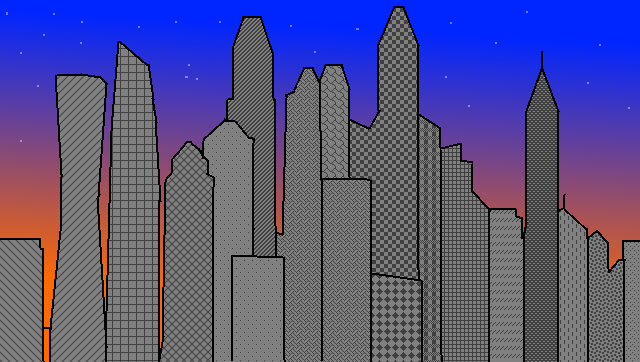

The Tychonic Gallery
This gallery contains some of the great Architectural Achievements of Tikhon the Great's time!

This is a perfectly-valid photograph of Tychonia, Tikhon the Great's Capital City!
Back